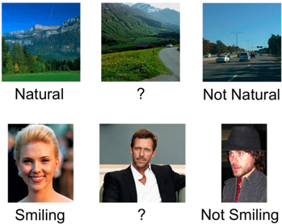
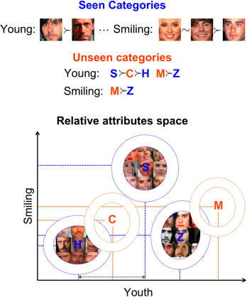
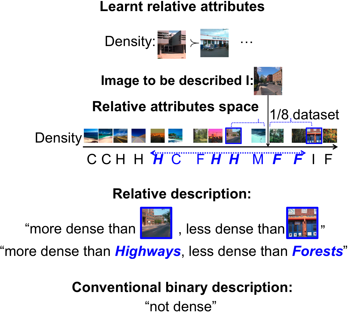
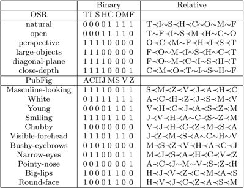
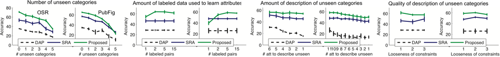
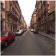
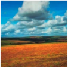

Relative Attributes
Marr
Prize (Best Paper Award) Winner, ICCV 2011
Devi Parikh and Kristen Grauman
"Who
in the rainbow can draw the line where the violet tint ends and the
orange tint begins? Distinctly we see the difference of the colors, but
where exactly does the one first blendingly enter into the other? So
with sanity and insanity."
-- Herman Melville, Billy Budd

[paper]
[data]
[code]
[demos] [slides]
[talk
(video)] [poster]
[translations]
Abstract
Motivation
Binary attributes are restrictive and can be unnatural. In the above examples, while one can characterize the image on the top-left and top-right as natural and man-made respectively, what would you describe the image in the top-center as? The only meaningful way to characterize it is with respect to the other images: it is less natural than the image on the left, but more so than the image on the right.
Proposal
Approach
We first train a set of relative attributes using the supervision provided on the seen categories. These attributes can also be pre-trained from external data. We then build a generative model (Gaussian) for each seen category using the responses of the relative attributes to the images from the seen categories. We then infer the parameters of the generative models of unseen categories by utilizing their relative descriptions with respect to seen categories. A visualization of the simple approach we employ for this is shown below:

A test image is assigned to the category with the maximum likelihood.

As seen above, in addition to describing an image relative to other images, our approach can also describe an image relative to other categories, resulting in a purely textual description. Clearly, the relative descriptions are more precise and informative than the conventional binary description.
Experiments
and Results
We conduct experiments on two datasets:
(1) Outdoor Scene Recognition (OSR) containing 2688 images from 8 categories: coast C, forest F, highway H, inside-city I, mountain M, open-country O, street S and tall-building T. We use gist features to represent the images.
(2) A subset of the Public Figures Face Database (PubFig) containing 772 images from 8 categories: Alex Rodriguez A, Clive Owen C, Hugh Laurie H, Jared Leto J, Miley Cyrus M, Scarlett Johansson S, Viggo Mortensen V and Zac Efron Z. We use concatenated gist and and color features to represent the images.
The list of attributes used for each dataset, along with the binary and relative attribute annotations are shown below:


Example binary descriptions of images as well as descriptions relative to categories are shown below:
| Image | Binary descriptions | Relative descriptions |
|  | not
natural not open perspective |
more
natural than tallbuilding, less natural than forest more open than tallbuilding, less open than coast more perspective than tallbuilding |
| not
natural not open perspective |
more
natural than insidecity, less natural than highway more open than street, less open than coast more perspective than highway, less perspective than insidecity |
|
|  | natural open perspective |
more
natural than tallbuilding, less natural than mountain more open than mountain less perspective than opencountry |
| White not Smiling VisibleForehead |
more
White than AlexRodriguez more Smiling than JaredLeto, less Smiling than ZacEfron more VisibleForehead than JaredLeto, less VisibleForehead than MileyCyrus |
|
| White not Smiling not VisibleForehead |
more
White than AlexRodriguez,
less White than MileyCyrus less Smiling than HughLaurie more VisibleForehead than ZacEfron, less VisibleForehead than MileyCyrus |
|
| not
Young BushyEyebrows RoundFace |
more
Young than CliveOwen,
less Young than ScarlettJohansson more BushyEyebrows than ZacEfron, less BushyEyebrows than AlexRodriguez more RoundFace than CliveOwen, less RoundFace than ZacEfron |
We provide the learnt relative attributes and their predictions for the two datasets used in our paper: Outdoor Scene Recognition (OSR) and a subset of the Public Figures Face Database (PubFig).
Relative Face Attributes Dataset. It contains annotations for 29 relative attributes on 60 categories from the Public Figures Face Database (PubFig).
We modified Olivier Chappelle's RankSVM implementation to train relative attributes with similarity constraints. Our modified code can be found here.
If you use our code, please cite the following paper:
D. Parikh and K. Grauman
Relative Attributes
International Conference on Computer Vision (ICCV), 2011.
Demos of various applications of relative attributes can be found here. A description of these applications can be found in the papers here.
D. Parikh and K. Grauman
International Conference on Computer Vision (ICCV), 2011. (Oral)
Marr Prize (Best Paper Award) Winner
[slides] [talk (video)] [poster] [relative descriptions demo]
Following are our other papers that use relative attributes:
A. Biswas and D. Parikh
Simultaneous Active Learning of Classifiers & Attributes via Relative Feedback
IEEE Conference on Computer Vision and Pattern Recognition (CVPR), 2013
[project page and data] [poster] [demo]
A.
Parkash and
D. Parikh
Attributes
for Classifier Feedback
European Conference on Computer Vision (ECCV), 2012 (Oral)
[slides] [talk (video)] [project page and data] [demo]
A.
Kovashka, D. Parikh
and K. Grauman
WhittleSearch:
Image Search with Relative Attribute Feedback
IEEE
Conference on Computer Vision
and Pattern Recognition (CVPR), 2012
[project
page] [poster]
[demo]
D. Parikh, A. Kovashka, A.
Parkash and K. Grauman
Relative
Attributes for Enhanced Human-Machine Communication (Invited paper)
AAAI Conference on Artificial Intelligence (AAAI), 2012 (Oral)
Several
translations of this page are available. The content is generated by
independent sources, and has not been verified by us. Consult at your
own discretion.
Romanian by science team.
Slovakian by Sciologness
Team.
Russian by
Alexander Nikiforov.
Indonesian by ChameleonJohn.com.
Polish by Grzegorz Adamski.
Czech by StudyCrumb.
Ukrainian by StudyBounty.
Portuguese by Artur Weber.
Estonian
by Write My Paper For Me
French
by
Avice Robitaille.
German
by Philip Egger.
Punjabi
by Bydiscountcodes Team.
Belarusian
by UKessay.
Vietnamese
by CouponBox.
Georgian by Mary Davidson.
Italian by CarinmyDNA.
Lithuanian by Team Eldorado.
Turkish by Casinority.
Slovenian by sportnestave.net.
Gujarati by Ravi Sahni.
Urdu by Samuel Badree.
Spanish by Agencia de Traduccion.
[Thanks to Yong Jae Lee for the webpage template]
{kind=link}
{kind=link}
{kind=link}
{kind=link}
{kind=link}
{kind=link}
{kind=link}